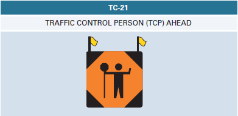

Traffic control persons
The purpose of a traffic control person
When to use a traffic control person
When not to use a traffic control person
PPE
| Day Time | Night Time |
|---|---|
| A vest with an adjustable fit and a side and front tear-away feature. | Retro-reflective silver stripes encircling each arm and leg or equivalent side visibility-enhancing stripes with a minimum area of 50 cm² per side during night-time hours. |
| A hard hat that is Canadian Standards Association (CSA) certified Class E – Type I or II. | reflective tape that doesnot alter the dielectric properties of the safety hat and is visible from all angles (minimum of 80 cm² recommended). |
| Safety boots that are CSA-certified, Grade 1 | Retro-reflective silver stripes encircling each arm and leg or equivalent side visibility-enhancing stripes with a minimum area of 50 cm² per side |
| Eye protection clear safety glasses for night or overcast, tinted safety glasses when sunny, consider goggles for extreme dust and wind. |
PPE inspection
This should be done
- While in storage.
- While in preparation for drop off at a work zone.
- During installation.
- Regularly during the course of the work.
Note
All PPE and traffic devices should be inspected in this way.
Traffic control person signage
When should they be inspected?
These should be inspected routinely as all other traffic control devices.
- While in storage.
- While in preparation for drop off at a work zone.
- During installation.
- Regularly during the course of the work.
Note
Both the TC-21 and TC-22 must meet the acceptable criteria for inspection and should not be used if they fall under that level
Section 4.1.1 page 67 OTM book 7
When should they be used?
They should only be used when a TCP is present and activelty working to direct traffic. When a TCP is not present, including lunch and other breaks, the TC-21 sign must be removed or covered.
The TC-21 traffic control person ahead
The TRAFFIC CONTROL PERSON (TCP) AHEAD is designed to clearly alert highway users to the presence of Traffic control persons.

Usage of the TC-21 sign
| TC21 usage | Description |
|---|---|
| When is it used? | At all times when a TCP is on duty. |
| When is it not used? | Taken down when the TCP is not on duty. |
| Where is it used? | Placed in advance of the TCP at a distance specified in the appropriate table |
| How is it setup? | Mounted on a portable stand with flagpoles and opaque fluorescent orange flags, 450 mm x 450 mm in size, mounted at a height of 1.5 m to 2.5 m above the ground. |
Inspection of the TC-21 sign
What are the criteria for inspections?
The TC-21 sign must meet the acceptable critera. If not they should not be used.
The TC-22 stop/slow paddle
This sign must be used by traffic control persons to direct traffic by stopping or slow down as required to ensure the safety of workers and road users.
Usage of the TC-22 sign
| TCP Signaling Requirement | Description |
|---|---|
| Instructions Compliance | TCP must signal the desired warning towards oncoming vehicles in accordance with the instructions detailed in Section 4, and the training given by the highway authority or the contractor. |
| Single TCP Usage | If only one TCP is being used, the side of the sign that is not facing the intended direction of control must be covered in order not to confuse drivers in the opposing direction. |
| LED Enhancement Option | The STOP side of the paddle may be enhanced with alternating flashing red LED lightbars installed horizontally and centered above and/or below the outer border of the STOP sign, as an option to the standard TC-22. |
Note
The led is to be used briefly as vehicles approach to increase visibilty.
Signaling to traffic as a TCP
Slow
Singalling for traffic to go slow should be with a hand motion instructing them to drive foward slowly.

| TCP Control Procedures Slowing traffic |
|---|
| Display the TC-22 SLOW Paddle sign |
| Slowly move the sign back and forth, if necessary |
| Use hand signals to wave traffic forward or to command a further reduction in speed |
Stop
Signal the cars to stop with a firm visible hand.

| TCP Control Procedures - Stopping traffic |
|---|
| Display the TC-22 STOP Paddle sign to the driver, extending the sign into the lane of oncoming traffic, giving the driver enough warning for a safe and comfortable stop. |
| Stand off the travelled portion of the highway until the first vehicle has come to a stop. |
| Move to a point on the highway where traffic in the queue can see him/her when traffic has stopped. |
| Ensure that opposing traffic has stopped and the last opposing vehicle has passed his/her post before moving traffic from a stopped position. |
Positioning Yourself as a TCP
TCPs should be positioned out of danger with an escape route and a view of at least 150 meters down stream.
Safety
Visibility
Considerations to be made for maximum visbility are as follows. (OTM Book 7 page 175)
The TCP should not stand in the shadows or where the sun impedes visibility.
Colour contrast should be maintained between the TCP and the background, to every extent possible.
Prevent other illuminated or reflective objects from distracting the visual attention of motorists away from the TCP.
Motorists should be able to see the TCP and respond in time.
Escape routes
View distance
TCPs should stand where they can see for 150 meters. This is to ensure that they have adequate time to respond to approaching traffic and that they can see far enough to give motorists adequate warning of the work area ahead.
positioning within the construction zone
Using TCPs in the field
Single TCP
A single TCP may be used in such a way that it is effectively one-way control, such as where traffic in one direction has an unobstructed lane.
| Guidelines for Single TCP Control are as follows |
|---|
| The length of the closed lane is short (up to 50 metres). |
| Traffic volumes and speeds are low (NPRS 60 km/h or lower). |
| Visibility is good and in daylight hours only. |
| The TCP holds traffic in the obstructed lane until the unobstructed lane is clear of traffic. |
The TCP is fucxntioning as a yield to oncoming traffic sign.
Two TCPs
This is the most common scenario
| TCP Communication and Coordination Guidelines are as follows |
|---|
| Lines of communication must be established prior to the start of operations. |
| The two TCP must be able to see and hear each other or have two-way radios for proper communication. |
| One TCP should be the lead TCP and coordinate all activities. |